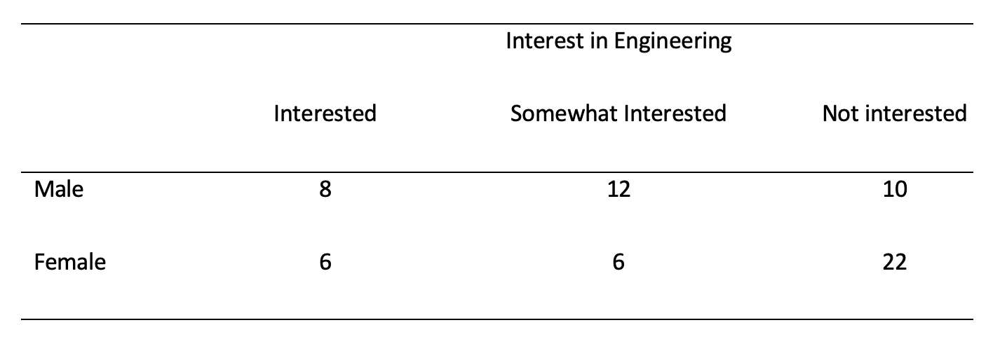

6 Week 14: Chi-square
Written by Margriet Groen (partly adapted from materials developed by the PsyTeachR team a the University of Glasgow)
This week we will focus on Chi-square as a measure of association between categorical variables.
6.1 Lectures
The lecture material for this week is presented in two parts:
How to do Chi-square in R (~19 min) You can find the example script in this week’s zip-folder (see under Pre-lab activity 3).
6.2 Reading
The reading that accompanies the topic this week is Chapter 20: Chi-square from the following textbook: Greene, J. and D’Oliveira, M (2006). Learning to Use Statistical Tests in Psychology (3rd Edition). Maidenhead, UK: Open University Press.
This text is available as an e-book in the Lancaster University library through this link.
Chapter 20 provides an accessible overview of Chi-square.
6.3 Pre-lab activities
After having watched the lectures and read the textbook chapter you’ll be in a good position to try these activities. Completing them before you attend your lab session will help you to consolidate your learning and help move through the lab activities more smoothly.
6.3.1 Pre-lab activity 1: Calculating Chi-square by hand and interpreting the results
Is there a relationship between the number of people who smoke and the number of people who drink? Please note that the question is the number of people (frequency) and not how much people drink/smoke. Alos not that these are fictitious data. You’ll need a table of critical values for Chi-square. This can be found in the ‘Week 14 – resources’ folder on Moodle.
 Pre-lab activity questions:
Pre-lab activity questions:
- Complete the Pearson’s Chi-square test by hand using the data above and fill in the blanks:
\(\chi 2\) ( , N = ) = , p
- Can you reject the null hypothesis?
6.3.2 Pre-lab activity 2: Data visualisation - practice with ggplot2()
In this week’s online tutorials, you will practise creating bar chars, a device for visualising the distribution of categorical variables.
If you’re ready to begin, go to the tutorial linked to below. There is no need to install or download anything. Each tutorial has everything you need to write and run R code, right in the tutorial.
- Bar Charts In this tutorial you will learn how to make and enhance bar charts with the
ggplot2package.
6.3.3 Pre-lab activity 3: Getting ready for the lab class
6.3.3.1 Get your files ready
Download the 122_week14_forStudents.zip file and upload it into the new folder in RStudio Server you created (see week 12 Pre-lab activity 4 for instructions on how to do that).
6.4 Lab activities
In this lab, you’ll gain understanding of and practice with:
- conducting Pearson’s Chi-square in R
- interpreting Pearson’s Chi-square in R
- reporting the results in APA format
- when and why to apply Pearson’s Chi-square to answer questions in psychological science
6.4.1 Lab activity 1: Understanding the application of the Chi-square test
6.4.1.1 QUESTION 1
How does Pearson’s chi-square differ from Pearson’s correlation?
6.4.1.2 QUESTION 2
Chi-square test of independence would be appropriate when testing the following questions:
- What is the relationship between gender and soft drink preference? True or False?
- b.How do males and females compare in terms of wanting to be a psychologist when they leave school? True or False?
6.4.1.3 QUESTION 3
Write the chi-square formula below.
6.4.1.4 QUESTION 4
What were your answers to the pre-lab activity 1 questions? Please compare them with other students at your table.
+a. Complete the Pearson’s Chi-square test by hand using the data above and fill in the blanks:
\(\chi 2\) ( , N = ) = , p
+b. Can you reject the null hypothesis?
6.4.1.5 QUESTION 5
Why is it recommended to opt for multiple 2 x 2 chi-squares instead of chi-squares larger than 2 x 2?
6.4.1.6 QUESTION 6
How could you ‘modify’ the contingency table below for chi-square analysis to aid subsequent interpretation of the data/results?

6.4.2 Lab activity 2: Reminders through association
For this lab, we’re going to use data from Rogers, T. & Milkman, K. L. (2016). Reminders through association. Psychological Science, 27, 973-986. You can read the full paper online but the short version is that the authors looked at how people remember to follow through with the intention of doing something.
Although there are lots of potential reasons (e.g., some people may lack the self-control resources), Rogers and Milkman (2016) propose that some people fail to follow through simply because they forget about their good intentions. If this is the case, the authors argue, then having visual reminders to follow through on their intentions may help people remember to keep them. For example, a person may choose to put a sticker for their gym on their car window, so that every time they get in the car they remember to go to the gym.
In Study 1 by Rogers and colleagues, participants took part in an unrelated experiment but at the start of the task they were asked to return a small stack of paper clips to the reception of the building at the end of the study and if they did so the researchers would donate $1 to a charity. They were then asked if they intended to do this. Those in the reminder-through-association (RTA) condition read “Thank you! To remind you to pick up a paper clip, an elephant statuette will be sitting on the counter as you collect your payment.” This message was followed by a picture of the elephant statuette. Those in the control condition simply read “Thank you!”.
What we want to do is to run a chi-square analysis to determine whether those in the RTA condition were more likely to remember to return the paper-clips than those in the control condition. Open the 122_wk14_labAct2.R script in RStudio and work your way through it. All instructions, hints and questions are contained in the script.
6.5 Answers
When you have completed all of the lab content, you may want to check your answers with our completed version of the script for this week. Remember, looking at this script (studying/revising it) does not replace the process of working through the lab activities, trying them out for yourself, getting stuck, asking questions, finding solutions, adding your own comments, etc. Actively engaging with the material is the way to learn these analysis skills, not by looking at someone else’s completed code…
The answers to the questions and the script containing the code will be available after the final lab session has taken place.